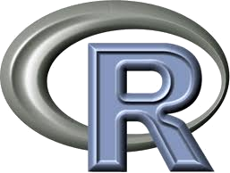

R Graduate Seminar
Biological analysis with R
Heath Blackmon
| Topics | Files and Links |
| Install R and RStudio | R instructions R Studio instructions syllabus |
| Navigating in R & R Studio Basics of R syntax Data structures in R |
worksheet 1 script for ex. 1 finch data R cheat sheet R style sheet |
| Subsetting Plotting |
worksheet 2 plotting arguments divergence data script for ex. 2 |
| MK models of Trait Evolution | worksheet 3 script for ex. 3 |
| Continuous Trait Evolution | worksheet tree chromosome numbers script for ex. 4 |
| Custom Functions | worksheet func. for ex. 5 script for ex. 5 |
| Putting it all together |
mcmc.samples |
| Birth Death Processes |
worksheet script for ex. 6 |
| PCA Elijah Wostl |
worksheet data |
| Time Series Analysis Ashley Asmus |
worksheet |
One of the best things about learning R is that there is an amazing amount of material available online. Almost any problem that you will experience has been seen before.
Lots of additional resources are available at the R website
Additional courses focussing on R are available: code school coursera
 R Seminar Resources by Heath Blackmon are
licensed under a Creative
Commons Attribution-NonCommercial 3.0 Unported License
R Seminar Resources by Heath Blackmon are
licensed under a Creative
Commons Attribution-NonCommercial 3.0 Unported License